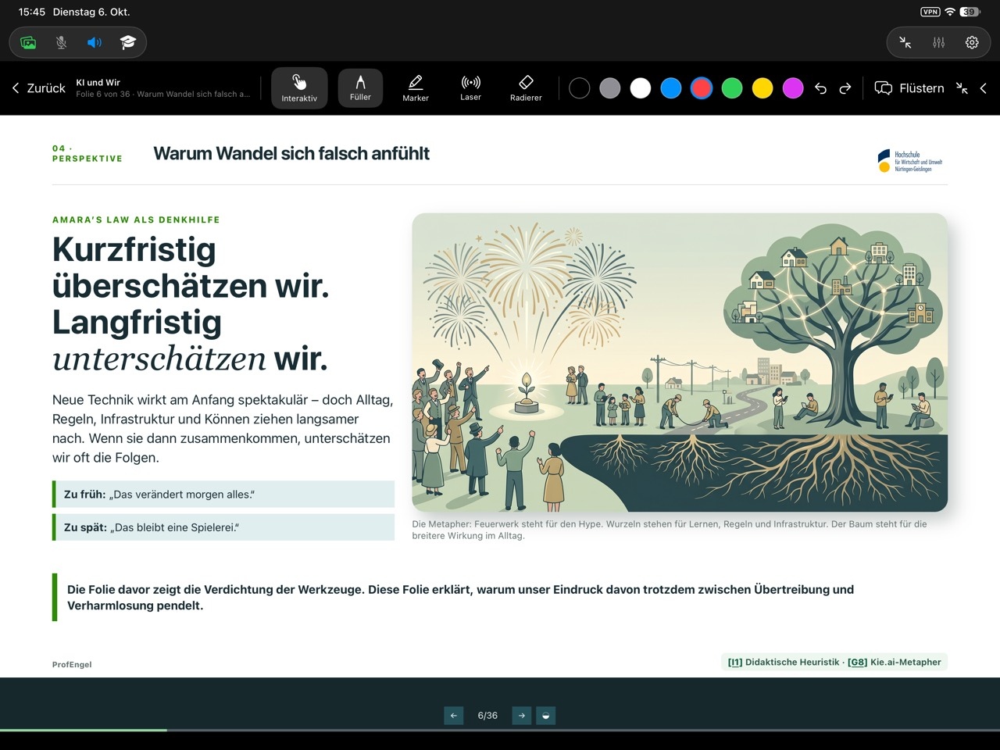
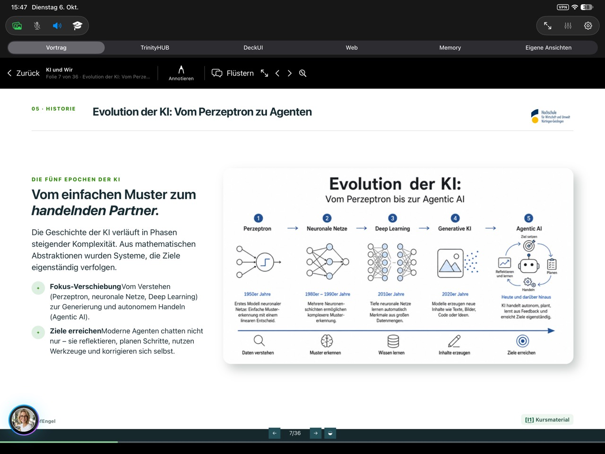
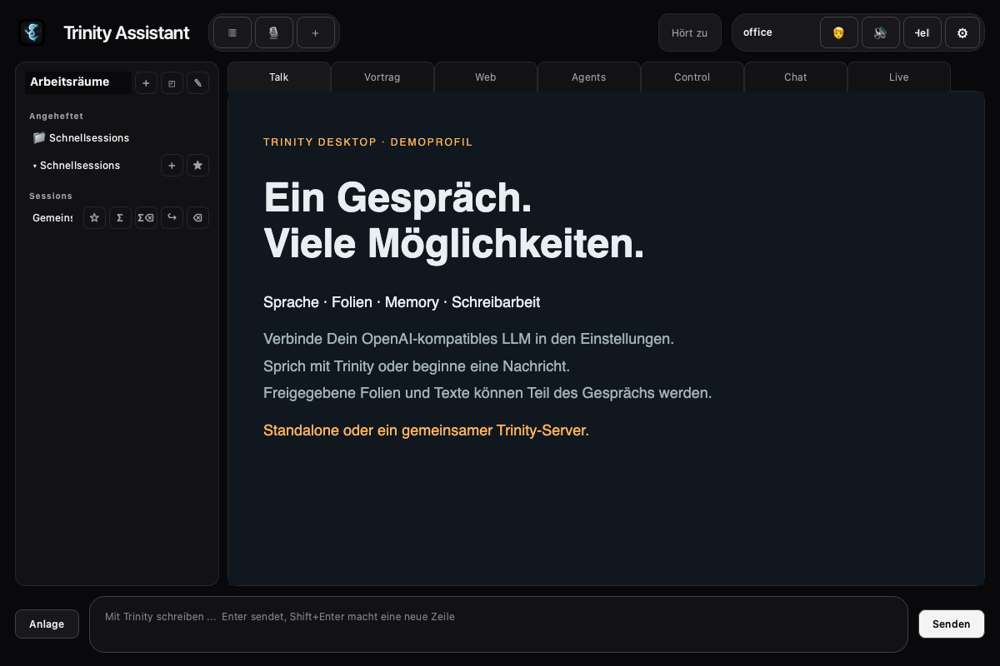
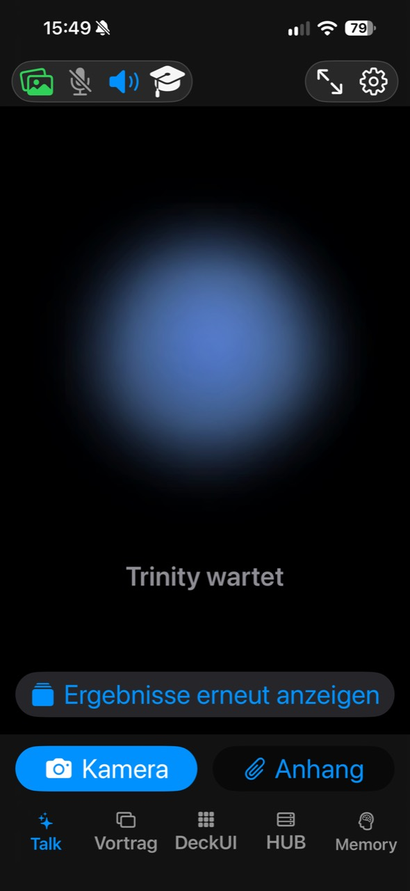
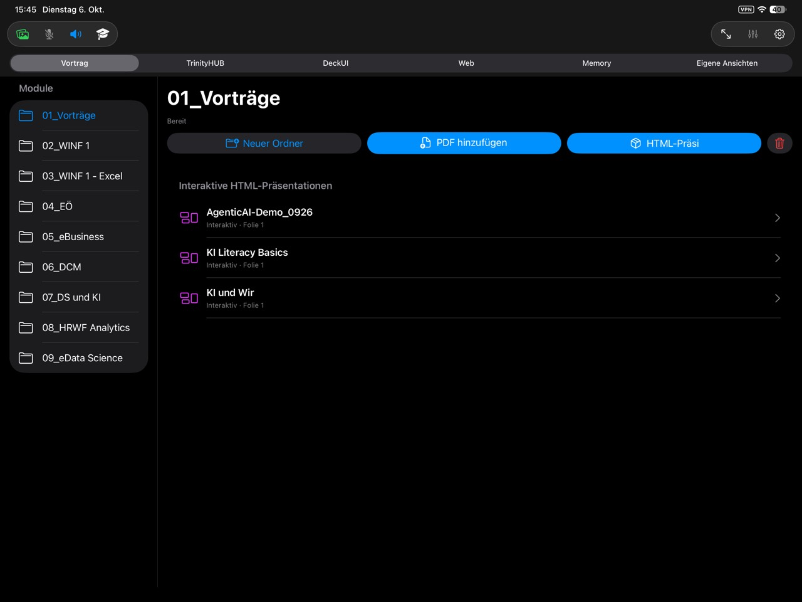
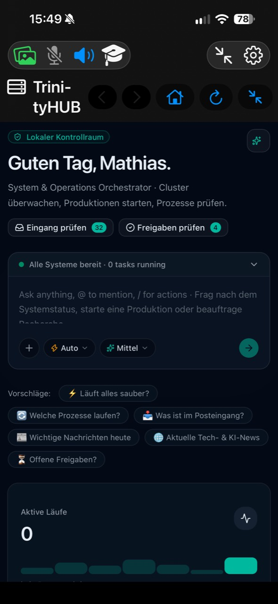
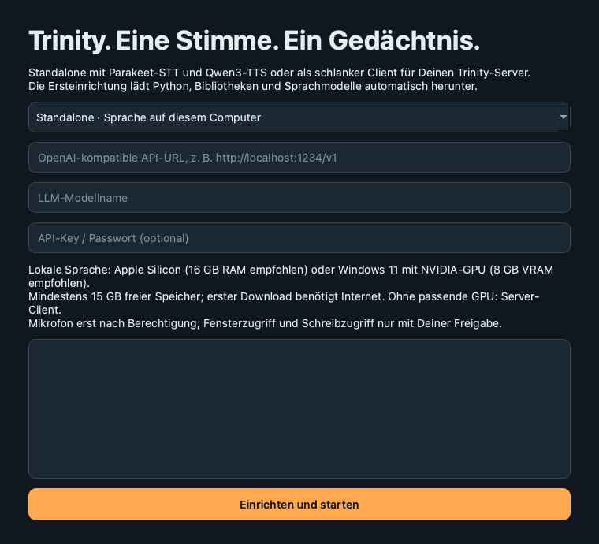

Natürlich sprechen
Office für direkten Dialog, Vorlesung mit Wakeword. Satzweises Antwortstreaming mit Schutz vor Eigen-Echo. Mikrofon und Lautsprecher unabhängig wählen.
Besprich Ideen. Verstehe Folien. Arbeite an Texten.
Für Vorlesung, Vorbereitung und alles dazwischen.
Standalone auf Deinem Computer oder ein zentraler Server für alle Geräte.
Parakeet-STT · Qwen3-TTS · Eve · Dein OpenAI-kompatibles LLM

Office für direkten Dialog, Vorlesung mit Wakeword. Satzweises Antwortstreaming mit Schutz vor Eigen-Echo. Mikrofon und Lautsprecher unabhängig wählen.
Gespeicherte Gespräche nach Thema oder Datum wiederfinden. Ein gemeinsames Gedächtnis auf Deinem Server, ohne manuelle Session-Auswahl im mobilen Hauptdialog.
PDF und interaktive HTML-Folien anzeigen und annotieren. Das aktive Ausgabegerät gibt die aktuelle Folie an Dein Vision-LLM weiter. Kein Rätselraten über „diese Tabelle“.
Nach Deiner Freigabe das aktive Fenster besprechen, diktieren und Texte überarbeiten. App-Unterstützung und macOS-Berechtigungen bestimmen, was möglich ist.
Optionale Websuche, generierte Bilder und Musik, Medien-Player und DeckUI für eigene Sounds. Eigene Anbieter konfigurieren; externe Dienste können Kosten verursachen.
Mac, Windows, iPad, iPhone und optional G2. Eine aktive Spracheingabe, ein unabhängiger Audioausgang. HUB, Werkstätten und eigene Web-Ansichten direkt erreichbar.




Agenten, Produktionsaufträge und eigene Systeme in der Companion-Ansicht öffnen. TrinityHUB ist ein separates Projekt; es wird nicht zusammen mit dem Desktop-Installer installiert.
Das HUB-Repository ist derzeit privat. Der Link ist nur mit freigegebenem GitHub-Zugriff erreichbar.

STT, TTS und Memory auf Deinem Mac oder PC. Eve als Initialstimme dabei. Nur Dein LLM-Endpunkt fehlt: URL, Modellname, optional API-Key.
Apple Silicon oder Windows mit NVIDIA-GPU erforderlich für schnelle lokale Sprache.
Ein Linux-GPU-Server trägt Modelle, Memory und Agenten. Deine Geräte reichen Audio und freigegebene Bilder weiter und spielen Antworten ab. Keine Windows-VM nötig.
Server und Clients benötigen eine authentifizierte Verbindung. Tailscale oder TLS statt offener Internetports.

macOS 14+, 16 GB RAM empfohlen. DMG mit grafischem Starter.
Mac-Download ↓Windows 11, NVIDIA-GPU, aktueller Treiber. 8 GB VRAM empfohlen.
Windows-Setup ↓Portable ZIPUbuntu mit NVIDIA-GPU. Vollständiger Quellstand und Server-Anleitung.
Server einrichten ↗Ersteinrichtung benötigt Internet und mindestens 15 GB freien Speicher. Große Modelle werden beim ersten Start geladen. LLM nicht mitgeliefert. Die neuen Starter sind noch nicht öffentlich signiert/notarisiert; macOS Gatekeeper und Windows SmartScreen können warnen. Prüfsummen, Hinweise und Quellcode im Release. Windows-GPU/Audio muss auf echter Hardware geprüft werden.
Downloadlinks führen zum Release mit den tatsächlich verfügbaren Dateien.
Sprache und Memory können lokal bzw. auf Deinem Server laufen. LLM, Websuche, Bild- und Musikdienste richten sich nach Deinen Einstellungen. Bei externen Anbietern verlassen die entsprechenden Daten Dein Gerät. Die Downloadseite verwendet keine Analyse-Tracker; GitHub verarbeitet Hosting-Zugriffe.
Nein. Abgeschlossene gespeicherte Gespräche können wiedergefunden werden. Unbeantwortetes passives Zuhören und lokale Diktate werden nicht automatisch als vollständiger Tagesmitschnitt archiviert. Auch Memory kann Lücken haben; wichtige Ergebnisse überprüfen.
Die native Companion-App ist fertig nutzbar im privaten Projekt. Ihre Veröffentlichung als nicht gelistete App über einen App-Store-Link wird vorbereitet und benötigt Apples Review und separate Unlisted-Freigabe. Kein öffentlicher GitHub-IPA-Download.
Mac-Bildschirmzugriff und Schreibsteuerung brauchen macOS-Berechtigungen. Drittanbieter benötigen eigene Schlüssel. Der iPad-Hörsaalmixer ist ein Hardwareprototyp: USB-Mikrofon und HDMI müssen gemeinsam am echten Adapter geprüft werden. Nicht jede App lässt sich gleich zuverlässig bearbeiten.